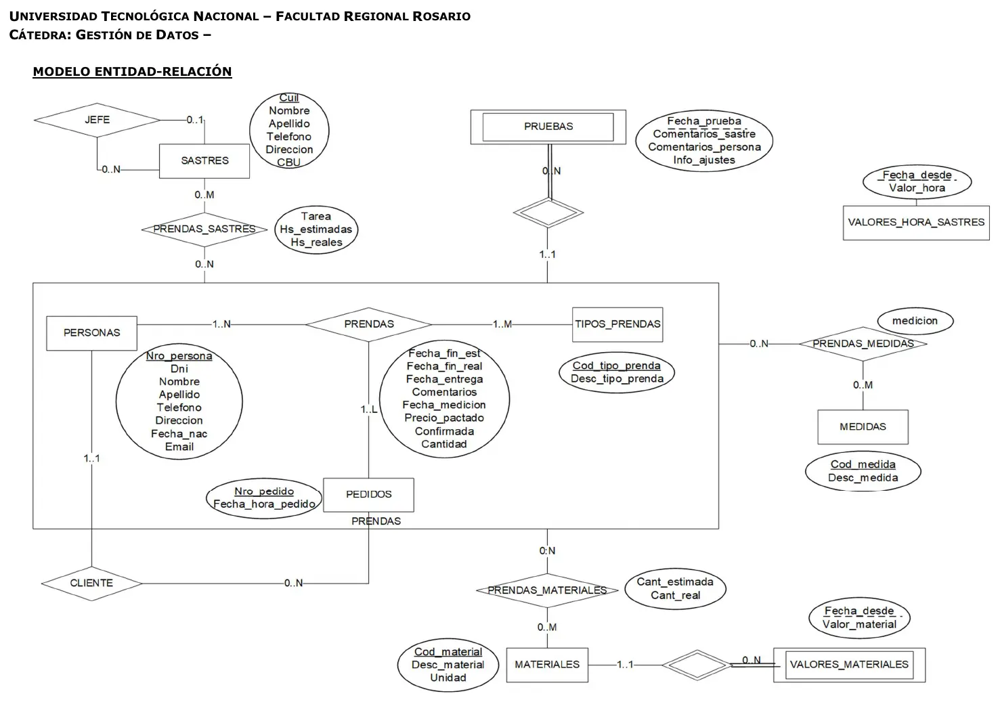
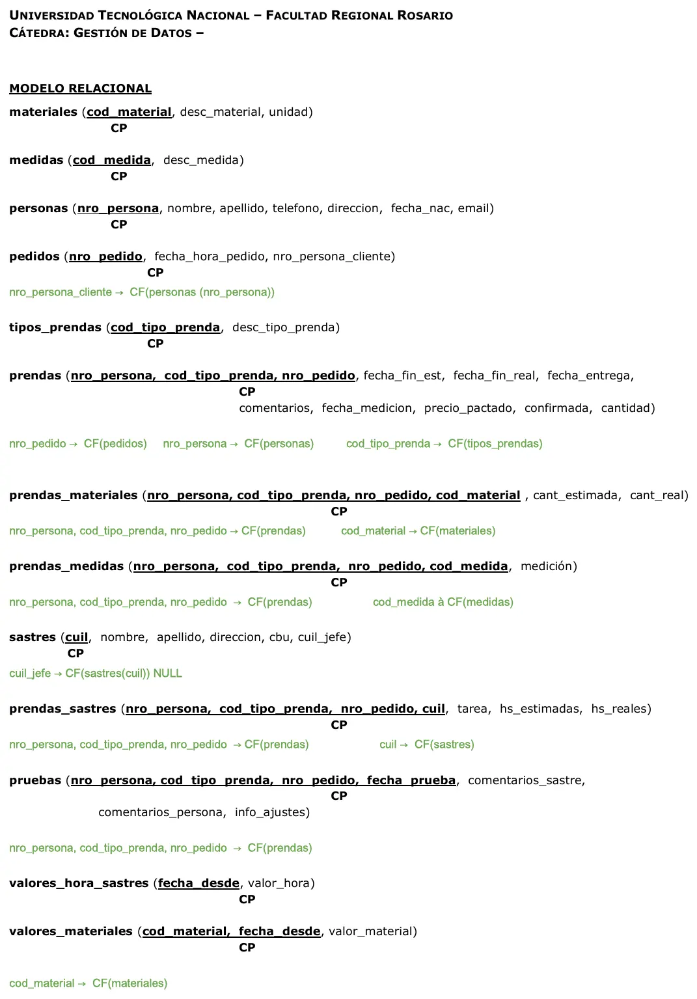

Sastrería Saco Roto
Final
Enunciado
Evaluación del Modelo de Datos y Algebra Relacional
Modelo de Datos
- a) Esquematice el modelo E-R que se deriva de la narrativa.
- b) Transforme el modelo E-R en un Modelo Relacional (pasaje a tablas), indicando los atributos de cada tabla. Especifique aquellos que pueden admitir valores nulos, indique las claves primarias y foráneas, en estas últimas indique, cuando se requiera, si admiten o no valores nulos.
Operaciones del Álgebra Relacional
- c) Desarrolle las operaciones en Álgebra relacional de los Requerimientos planteados. En cada requerimiento seleccione los datos relevantes a exponer.
La sastrería se dedica a la confección de prendas a medida.
Las personas1 que desean encargar la confección de prendas de diferentes tipos2 son atendidas por un encargado quien registra el pedido3 de confección.
El encargado de la sastrería registra todos los datos de las prendas4 de cada tipo2 encargadas por las personas1. Una vez registrada la prenda, el encargado asigna a la misma uno o varios sastres5 en función de la complejidad de la prenda e indica las tareas que realizará cada sastre y la cantidad de horas estimadas. Cuando cada sastre completa sus tareas se registra la cantidad de horas reales que le llevó la confección de la prenda.
El encargado además pacta con cada persona el/los material/es7 con que se realizará cada prenda y deja registrado en el sistema, para cada prenda y material, qué cantidad estimada se requerirá. Cuando finaliza la confección de la prenda se registra la cantidad real de material que llevó el trabajo.
Para el seguimiento de las tareas que se realizan para la confección de las prendas se deberá: registrar las medidas9 que se toman, registrar las pruebas10 que se realizan.
Para el cálculo del costo de cada prenda se requerirá sumar el costo de los materiales8 y el costo6 de la mano de obra requerida.
Reglas
- Las personas se identifican por número de persona que es único y se registra además su DNI, nombre, apellido, teléfono, dirección, fecha de nacimiento y su cuenta de correo.
- Los tipos de prendas están codificados y tienen una descripción y son cada uno un tipo de prenda que el Saco Roto puede confeccionar para sus clientes. Ej.: traje, saco cruzado, vestido de noche, chaleco, etc.
- Los Pedidos se identifican con un número de pedido único y secuencial, de ellos se registra fecha y hora de pedido. Puede ser que se presente un grupo familiar a encargar prendas, por lo que en el Pedido se registra una de ellas como responsable y será el Cliente a quien la sastrería cobrará el Pedido una vez confeccionadas las prendas
- De las prendas solicitadas de cada tipo por las personas se registra la fecha de entrega, la fecha de fin estimada de confección, la cantidad, el precio pactado y comentarios. Una vez aceptado el precio por el cliente se registra la prenda como confirmada y una vez confeccionada, la fecha de fin real.
- Los sastres se identifican por su CUIL y se conocen su nombre y apellido, teléfono, dirección y el CBU de su cuenta sueldo para hacer los depósitos del salario. Todos los sastres (salvo el jefe) reportan a un único jefe.
- A todos los sastres se les paga el mismo valor por hora trabajada y este valor varía en el tiempo. Para calcular el costo de la mano de obra se multiplica el valor de la mano de obra vigente a la fecha del pedido multiplicado por las horas estimadas.
- Los Materiales que se utilizan en una prenda están codificados, tienen una descripción y al unidad en que se miden. Ej.: 01-tela mecánica m2, 02-raso m2, 03-botón plateado c/u, 04-botón forrado c/u, etc.
- Los materiales con que se realizan las prendas tienen un valor por unidad que varía en el tiempo. El costo de los materiales para una prenda se calcula en función del valor del material a la fecha en que se solicitó el pedido multiplicado por la cantidad estimada.
- Las medidas que deben tomarse están codificadas y tienen una descripción (por ej.: 1-largo de manga, 2-hombros, cintura, cadera, etc.). Se registra entonces para cada prenda y cada medida la medición realizada.
- Las pruebas deben quedar registradas asociadas a cada prenda solicitada y para la fecha en que fueron realizadas. Se registrará para cada prueba los comentarios del sastre, los comentarios del cliente e información para los ajustes.
Requerimientos
- Dado un Pedido y una Persona listar todas las prendas solicitadas y confirmadas indicando todas las pruebas realizadas.
- Indicar qué personas han solicitado los mismos tipos de prenda que ‘Perez, Juan’.
Todas las operaciones que realice deben copiarse a un archivo que será entregado una vez completado el examen.
El nombre del archivo deberá tener la forma: APELLIDO_NOMBRE.sql
DDL
- (Esta consigna es eliminatoria). Desarrolle las sentencias DDL requeridas para completar la definición de las tablas PRENDAS y las tablas directamente relacionadas con ella.
Copie el DDL que se obtiene con la herramienta al archivo a entregar.
DML
- Listado de prendas sin confeccionar: Listado de prendas que aún no se han terminado de confeccionar. Mostrar: Nombre y apellido de la persona, descripción de la prenda, fecha del pedido, fecha fin estimada de la prenda, fecha_entrega_requerida y cantidad de días de demora en función de la fecha requerida a hoy (función DATEDIFF).
- Estadística de tipos de prendas: Mostrar los tipos de prendas que nunca se han vendido. Indicando código del tipo de prenda y descripción.
- Última fecha de prueba: Realizar el procedimiento "ult_prueba" que dada una fecha muestre por cada persona y tipo de prenda, cuál fue la última prueba realizada.
Mostrar número y nombres de las personas, tipo de prenda, descripción del tipo de prenda y fecha de última prueba. Si una persona tiene varias pruebas del mismo tipo de prenda el mismo día mostrar una sola vez. Ordenar por fecha en forma descendente y por apellido en forma ascendente.
Probar el procedimiento con la fecha: 5/11/2013
TCL/DDL (las consignas referidas a DDL se consider
- La tabla MATERIALES tiene el atributo unidad de medida que el usuario registra manualmente sin la posibilidad de controlar la integridad del dato. Se requiere entonces mantener la tabla unidades_medida que contenga los distintos valores de las unidades de medida hasta ahora registrados para luego vincularla a la tabla materiales. Para ello se requiere.
- a) Crear la tabla: UNIDADES_MEDIDA con los atributos cod_unidad (clave primaria) y desc_unidad. Nota: Se sugiere indicar el atributo cod_unidad como auto-incremental
- b) Registrar en la tabla UNIDADES_MEDIDA creada las diferentes unidades de medida que existan en la tabla de MATERIALES.
- c) Agregar el atributo cod_unidad a la tabla de MATERIALES
- d) Actualizar el atributo cod_unidad de la tabla de MATERIALES con el correspondiente cod_unidad de la tabla UNIDADES_MEDIDA
- e) Completar la definición de la tabla MATERIALES para lograr controlar la integridad referencial NOTAS:
- Para las consignas 4a), 4c) y 4e) copiar el DDL que se obtiene de la herramienta utilizada
- Todas aquellas operaciones que deban realizar actualizaciones de registros en las tablas de la base de datos deben ser realizadas como una transacción.
- En el punto e) revise las opciones de control de la integridad referencial en Borrado o Actualización.
Resolución
Ver la resolución: DER, pasaje a tablas y SQL
Son las hojas originales. Tocá una para verla en grande.




SQL
-- Resolución Propuesta
-- Ejercicio 1 Tema 1
-- Listado de prendas sin confeccionar
-- inner join - is null - uso de función - order by
SELECT p.nombre, p.apellido, tp.desc_tipo_prenda, ped.fecha_hora_pedido, ps.fecha_fin_est, ps.fecha_entrega_requerida,
datediff(current_date(),ps.fecha_entrega_requerida) dias_demora
from prendas pr
inner join personas p on pr.nro_persona = p.nro_persona
inner join prendas ps on pr.cod_tipo_prenda = ps.cod_tipo_prenda
inner join pedidos ped on ps.nro_pedido = ped.nro_pedido
inner join tipos_prendas tp on ps.cod_tipo_prenda = tp.cod_tipo_prenda
where ps.fecha_fin_real is null
ORDER BY dias_demora desc;
-- Ejercicio 2
-- Estadística de tipos de prenda
-- subconsulta
select tp.cod_tipo_prenda,tp.desc_tipo_prenda
from tipos_prendas tp
where tp.cod_tipo_prenda not in (select pre.cod_tipo_prenda from prendas pre);
-- Ejercicio 3
-- Ultima supervisión de pruebas
-- Procedimiento - tabla temporal
USE `saco_roto`;
DROP procedure IF EXISTS `ult_fecha_prueba`;
DELIMITER $$
USE `saco_roto`$$
CREATE DEFINER=`root`@`localhost` PROCEDURE `ult_fecha_prueba`()
BEGIN
drop temporary table if exists maxi;
create temporary table maxi
SELECT nro_persona, cod_tipo_prenda, max(fecha_prueba) ult_fecha
from pruebas
where fecha_prueba <= fecha_in
group by 1,2;
select p.apellido, p.nombre, pr.cod_tipo_prenda, desc_tipo_prenda,ult_fecha
from personas p
inner join maxi on p.nro_persona = maxi.nro_persona
inner join pruebas pr on p.nro_persona = pr.nro_persona
and pr.cod_tipo_prenda = maxi.cod_tipo_prenda
and pr.fecha_prueba = ult_fecha
inner join tipos_prendas tp on pr.cod_tipo_prenda = tp.cod_tipo_prenda
order by ult_fecha desc, apellido asc;
END$$
DELIMITER ;
call `ult_fecha_prueba`("2013-11-05");
-- Ejercicio 4 Tema 1
-- Procedimiento: Agregar tabla en función de datos existentes
-- DDL - TCL - INSERT SELECT distinct - update
-- a)
CREATE TABLE `saco_roto`.`unidades_medida` (
`cod_unidad` INT NOT NULL AUTO_INCREMENT,
`desc_unidad` VARCHAR(45) NULL,
PRIMARY KEY (`cod_unidad`));
-- b)
start transaction;
insert into unidades_medida (desc_unidad)
select distinct mat.unidad
from materiales mat;
commit;
-- c)
ALTER TABLE `saco_roto`.`materiales`
ADD COLUMN `cod_unidad` INT NULL AFTER `unidad`;
-- d)
start transaction;
update materiales
SET cod_unidad = (select um.cod_unidad from unidades_medida um where um.desc_unidad = materiales.unidad);
commit;
-- e)
ALTER TABLE `saco_roto`.`materiales`
DROP COLUMN `unidad`,
ADD INDEX `unidad_medida_fk_idx` (`cod_unidad` ASC);
ALTER TABLE `saco_roto`.`materiales`
ADD CONSTRAINT `unidad_medida_fk`
FOREIGN KEY (`cod_unidad`)
REFERENCES `saco_roto`.`unidades_medida` (`cod_unidad`)
ON DELETE RESTRICT
ON UPDATE CASCADE;¿Cómo te fue?
Marcá cada tema del examen.
- DERDe la narrativa al DER, en 1° parcial
- PasajePasaje a tablas, en 1° parcial
- ÁlgebraÁlgebra relacional, en 1° parcial
- SQLSQL para la práctica, en 2° parcial